EDF 5400 ADHD Labs: Part 4: Regression
Lab Four: Regression
At the end of this lab you should be able to perform a simple linear regression, including diagnostics and making predictions. The question we’re exploring in this lab is:
Can the impulsivity symptoms be used to predict general anxiety in ADHD patients?
Prevatt et al. (2015) were interested in how the symptoms of attention deficit hyperactivity disorder (ADHD) affect the performance of college students. To study this, they looked at the relationship of the two key symptoms of ADHD, inattention and impulsivity, on measures of both academic and general anxiety. In other words, they were looking for a correlation between the symptoms reported by participants and a measures of academic anxiety. In this lab, we are going to examine the relationship between one symptom, hyperactivity impulsive symptoms (hyper), and the general anxiety measure (GADD).
To answer our research question we’ll need to answer the following questions in our analysis:
What is the correlation between the hyperactivity impulsive symptoms (
hyper) and general anxiety (GADD)?Can we use linear regression to predict the anxiety score (
GADD) from the impulsivity score (hyper)? What is the prediction line? How much of the variance in the anxiety score can be predicted by the hyperactive impulsive symptoms score?Is there any reason to believe that the regression is different for students from different years?
There are three students with hyperactive impulsivity scores (
hyper) above 30. Do they strongly effect the estimated regression line and/or correlation?Student 617 scored 12 on the hyperactive impulsivity (
hyper) scale. What is a 95% prediction interval for his anxiety score (GADD)? Does the student’s score fall within the interval?
The Data
The data file with the data for this lab can be found in the data library. This is the same data set used in Lab One. Refer to the first lab handout for instructions on reading the data set in.
If you saved your data as an SPSS .sav file after the first lab, you can use that instead of reading it in again. If you didn’t save the .sav, you’ll have to download the raw data and clean it again. Always store your raw and cleaned data somewhere safe
Don’t forget that you need to:
- add human readable labels to the variables,
- add string values for the nominal and ordinal variables, and
- make sure the value -9 is coded as missing.
This data set has lots of missing data. Some of the data are missing at random, some of those data are structurally missing. In particular, the control students did not have all of the same measures taken about their performance that the ADHD students did. We can use some descriptive statistical analysis to see who is in our data set. As before, use…
Analyze > Compare Means > Means …
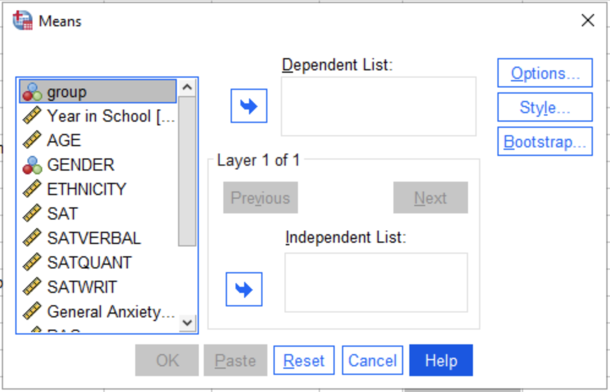
…to compare the sample sizes of the general anxiety score (GADD) and the hyperactive impulse symptoms (hyper) for the control group and the ADHD group1. What do you see? How do the measures differ? Are there any missing values?
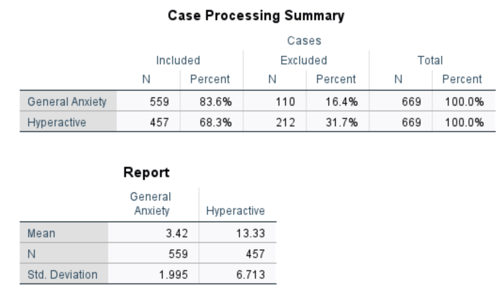
The SPSS scatterplot, correlation and regression commands will only use complete cases—students who have both anxiety and impulsivity scores—in the analysis. What does that say about who is included in the sample?
Initial Analysis
We have already done much of the univariate exploratory analysis of the data in lab one. We will now concentrate on the relationship between hyperactive impulsive symptoms (hyper) and the general anxiety score (GADD). The basic exploratory tool for exploring the relationship between two continuous (i.e., interval or ratio) variables is the scatterplot. The command for building a scatterplot is:
Graphs > Legacy Dialogs > Scatter/Dot…
Select simple scatterplot from the first window that appears. Place GADD in the x-axis and hyper in the y-axis as shown in Figure 3 and click OK to generate your plot.
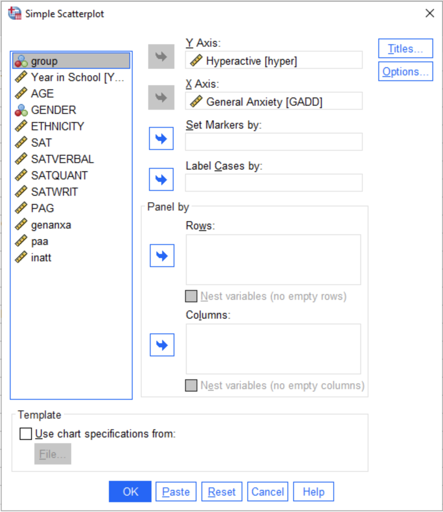
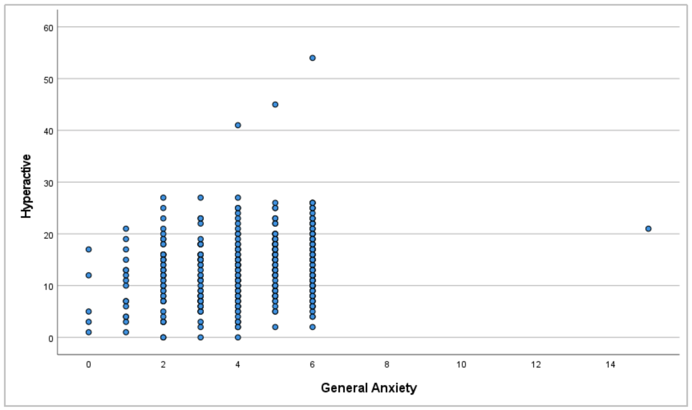
Linearity
We want to check to see if the relationship is linear curved or linear. To do this, double click on the plot to open the Chart Editor. Now we can click on the line icon 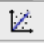, this will add a regression line.
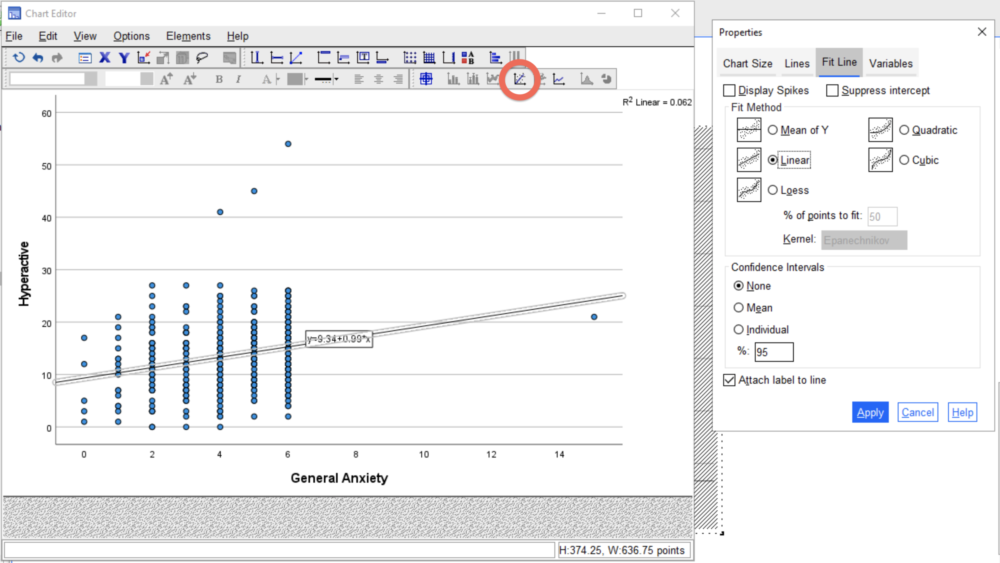
Do the data look roughly linear?
Remember, the linear regression will only pick up the linear part of the relationship, not the curve. It’s up to you to ensure that your data is appropriate for the test you’re trying to run. More accurately, however, as a researcher you would want to select the model that is most appropriate for your data. But that’s difficult when you’re learning about your first models.
Outliers
We also want to check for the presence of outliers in our data. To identify outliers in SPSS click the Data Label Mode icon in the SPSS Plot Editor to turn your cursor into an identification tool.
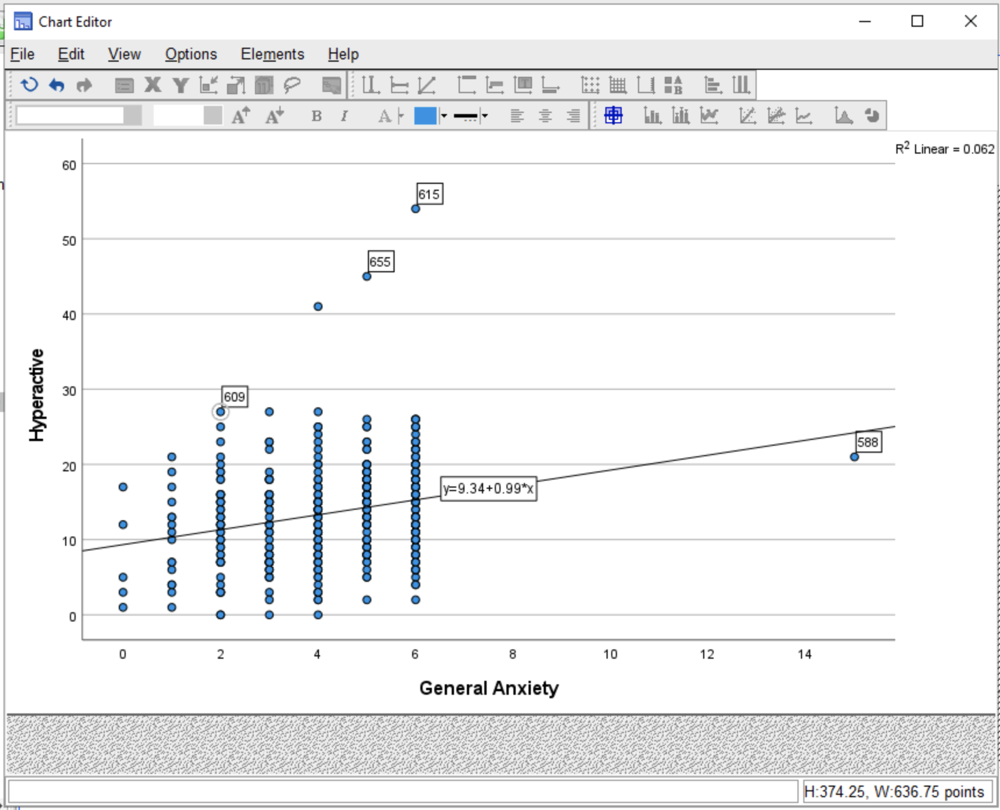
You can click on any data point to make its case number appear and disappear. Use this procedure to look for outliers. We are looking for two kinds of points. First, we are looking for points in the extreme range (high or low) of the x-axis which might be highly influential. Second, we are looking for points that are not generally associated with the point cloud.
In general there are three things to look for in a scatterplot are:
- Are the data linear? Curved? Sort of a round blob?
- Are there any outliers? If so, which points?
Confounding Variables: School Year
Finally, we want to check to see if the year in school (YEAR) makes any difference with the relationship we’re interested in exploring. Unless you’re working with a literal vaccum, as this is espeically true for social sciences, there are always going to be other variables that influence the relationship you intend to study. We call these extraneous influences confounding variables. It’s important to check for potential confounders. You do not always have data to check every potential confounding variable, but when we design a study we always try and include important variables that may influence our results (e.g., age, gender, location, etc.).
To check whether one of these variables might be influencing on the reltionship we’re studying, we want to use different symbols or colors to represent group membership (i.e., year) in our scatterplot 2. Generate another scatterplot exactly as you did in Figure 3, but this time add YEAR to the “Set Markers by” box in the scatterplot dialogue. This will produce a plot with different colored points to represent which year the person (i.e., point) is in.
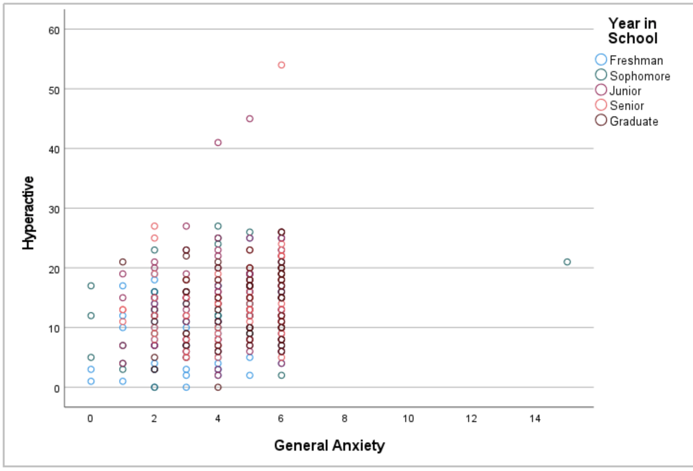
As you can see, the default is to use various colors to denote different groups. However, it’s difficult to see clear patterns when points are grouped tightly together. Let’s change the symbol used for different points in the Chart Editor.
Open the Chart Editor by double clicking on the scatterplot in your output window. Once open, double click on any point in the scatterplot to open the marker properties and choose the Variables tab.
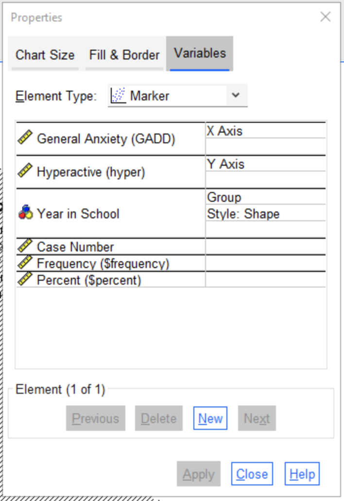
The Year in School (YEAR) variable is in the Group row. Under the grouping option you can choose the Style. By default it will show Boarder Color, but we want to click on this option, which should produce a drop-down menu, and select Shape and click Apply.
Now look at the plot. Do all of the groups follow the same general pattern, or are the groups visibly separate?
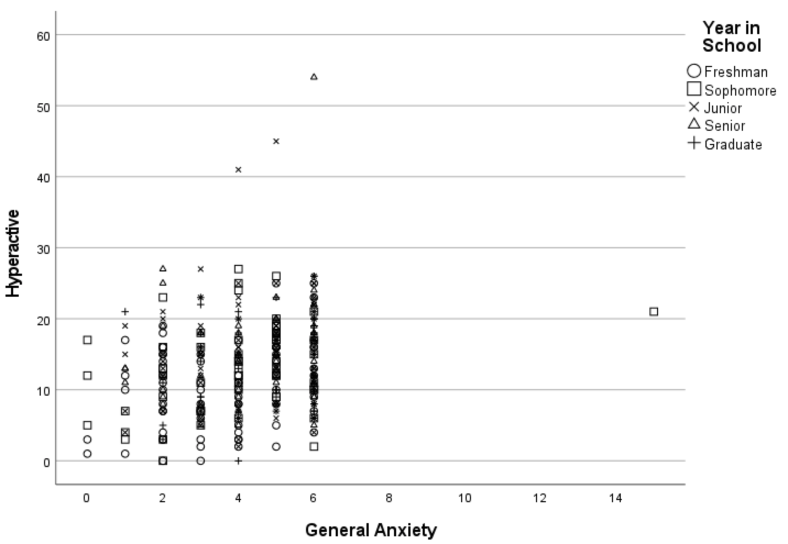
Even with using shapes it is difficult to see any clear patterns in the main cluster, which can be a good trait depending on your purpose! How about the outliers? Is there a certain group that seems to tend towards a particular area?
When we’re checking for confounding variables, we’re wanting to make sure there is not another varaible (e.g., year in school) that explains a pattern we may or may not see in the scatterplot. Let’s look at one more example by checking whether there is a clear pattern between male and female respondents.
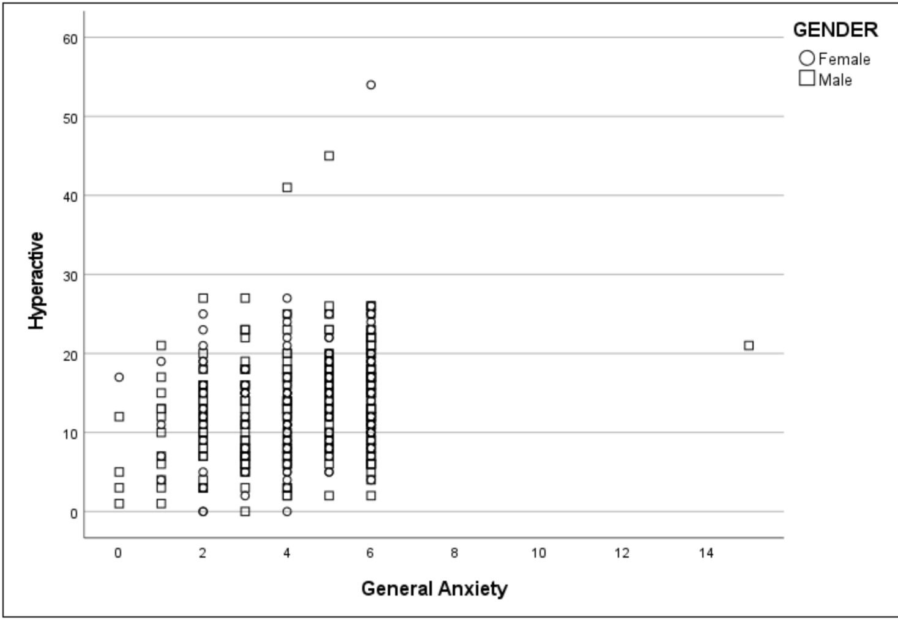
This does show a few points at both the upper and lower end of the x-axis are more male, but those are just a few outliers and not a true clear clustering of two groups.
Correlations
It does not appear we have to worry too much about confounding variables—based off the data we have—so let’s move on to correlations. To calculate the correlations, use:
Analyze > Correlate > Bivariate…
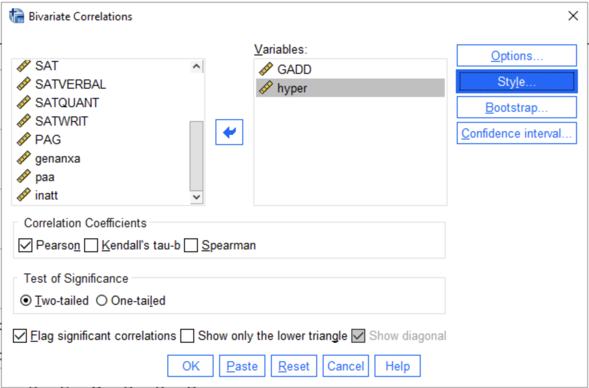
What is the correlation between the two scores of interest? Is it weak or strong? Positive or linear?
Normally, APA style would have us report the p-values 3 and the sample sizes along with the correlations. Don’t bother with the p-values, as we haven’t covered them in class yet, but do report the sample sizes. Are the sample sizes different? If so, why? Is that difference likely to affect the outcome?
Simple Linear Regression
Linear regression in SPSS is done through the menu item
Analyze > Regression > Linear…
In this dialog you select the dependent variable and one or more predictor (independent) variables4. You can also add case labels and these will be used in the diagnostic plots. Our question asks whether we can predict the anxiety score (GADD) using the impulsivity score (hyper). Enter GADD as the dependent variable (i.e., the predicted) and hyper as the independent (i.e., predictor) variable.
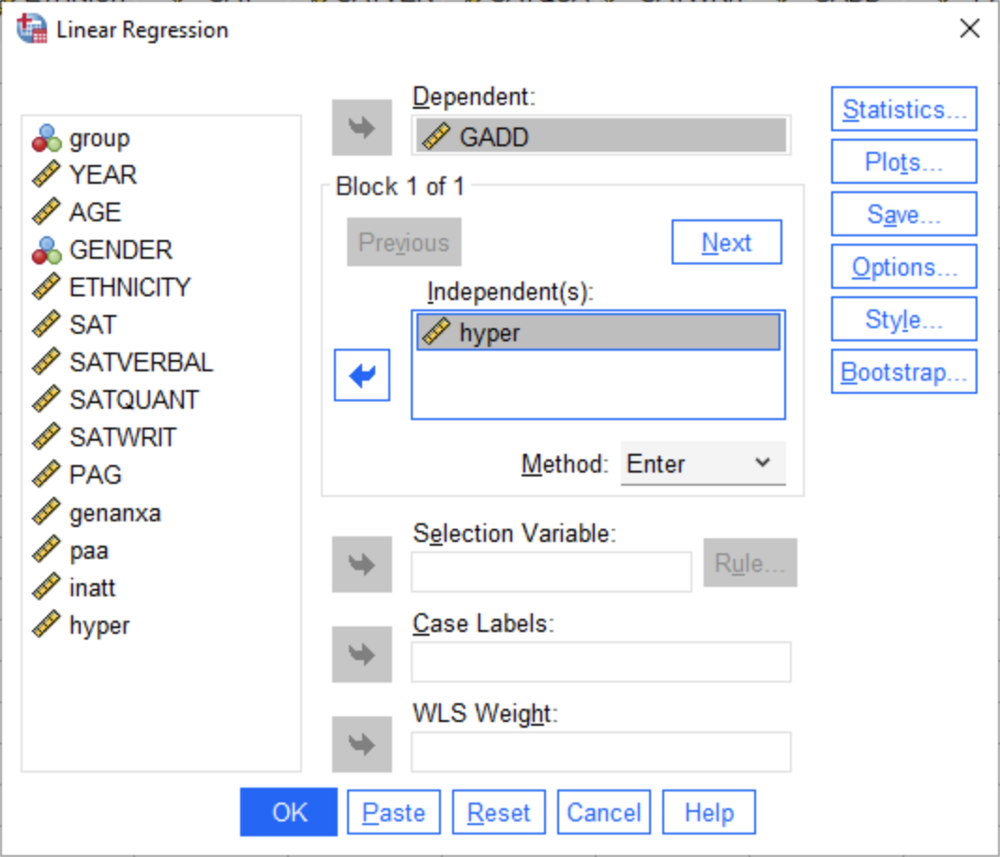
The Statistics… button provides a pop-up dialog in which you can select various statistics about the regression. In particular, you will want confidence intervals5 for the coefficients and model fit statistics.

The Plots… button6 provides a pop-up dialog in which you can select plots. Checking “Histogram” will get you a histogram of the residuals7. You can add diagnostic plots using this dialog box. Select a variable for the x-and y-axis and then hit next to get the opportunity to select another plot. The plot that I like best is the residuals versus predicted values. Select *ZPRED (the standardized predicted values) and move this to the x-axis, and select *ZRESID (the standardized residual values) and move this to the y-axis.
The Save... button provides a pop-up dialog that allows you to save predicted values and residuals. The Unstandardized predicted values are the values you would get if you computed the predicted value using the estimated slope and intercept from the full sample. (Russell also likes the Adjusted predicted values, which are from the regression line that leaves out the point being predicted – you can try these out, to see which are helpful to you.) You will also want a prediction interval for the individual predictions. Finally, saving some kind of residual will allow you to make additional plots. The standardized residuals are the most useful.
The Options... dialog has options relevant to multiple linear regression and missing values. We don’t need to worry about it.
Look at the output and check the correlation. Is the relationship strong or weak? Is it plausible to believe that there is a linear relationship between the two scores? Are you concerned about any points?
Diagnostics
One of the first assumptions of least squares regression is that the residuals are approximately normally distributed. This can be tested with a histogram of the residuals. To do this in SPSS you need to save the residuals (either the raw residuals or the standardized residuals for this test) when doing the regression.
A problem with the plots generated by SPSS is that if you use Case labels all of the points are labeled. This makes the plot busy and difficulty to read. Turn off the labels as described above then select the cross-hair data labeling mode button. You can now pick out points that look unusual to label. Also, don’t forget to add Labels for your variables. This will give you human readable labels on the x- and y-axes. If you did forget, you can always double click on the axis label in the graph editor to produce a better label.
The second assumption is that all of the residuals have approximately the same variance. We can test this with a fitted value versus residual plot. For this we want the standardized residuals and the predicted values. We can either do this from the saved values or we can request it through the regression dialog.
The residual versus predicted plot contains a lot of information. First, if any of the residuals is particularly large (or small) we suspect an outlier. Secondly, if we can detect a curved pattern, then that is an indication that the linear regression is not explaining all that is happening. There may be some higher order polynomial effect. Third, we can identify heteroscedasticity (to check the homogeneity of residual variances). This usually results in a triangle shape pattern for the residuals: residuals on the left are larger in magnitude than the ones on the right (or the other way around). If you go on to take EDF 5401 you will learn more about heteroscedasticity and what to do about it.
If you detect outliers, you may wish to re-run the analysis without the outliers. If the conclusions are substantially different, you should report both conclusions.
The Assignment
The assignment is to analyze the data Alec-5400Subset.csv to find if there is a linear relationship between the hyperactive impulse scores (hyper) and the general anxiety scores (GADD). You write up should address the five questions given in Section 1.
Your write up should be no more than 2 – 4 double spaced pages (PLUS your tables and figures). You should also follow the general outline of a scientific journal article:
Introduction – State briefly what you are studying and why somebody might care.
Background (Minimal for this lab) – A brief summary of the Prevatt et al. (2015) data collection.
Problem statement/Hypothesis – You need a clear statement of the problem you are tackling. Additionally you can form a hypothesis – a prediction about what you will find. A formal paper usually requires both, but for the lab you can get by with just one of the two. A missing, buried or unclear problem statement will result in lost style points.
Data description/Measures – Here you should talk about what the variables are and what they represent. Don’t forget a reference to where the data come from! Also talk about who is included in the data set you actually analyze. Is it both control and ADHD students, or just one of those groups?
Results – For this lab you will need three parts. First you need enough descriptive analysis to explain if and why you made any changes to the data (such as taking logs). Second, you need to describe the regression model (i.e., give the regression equation) and how it fits. Finally, you will need to describe the prediction of the anxiety score for Student 617 based on the hyperactivity impulse score. Give both a point and an interval estimate for this prediction, and describe whether or not it worked.
Conclusions – Recap the most important results and relate them back to the real world. What was the answer to your research question? Are there any limitations of the way the data were collected or the analysis that would affect the ability to generalize beyond your sample? In particular, to which population does it apply (all students or ADHD students only).
As before you may place figures or tables either interspersed in the text or at the end of the document. Remember each figure and table should have a number, a caption (a clear description of what is in there) and should be referenced somewhere in the text. Many teams did not do this on the first drafts of Lab 1!! If you don’t have anything to say about it, why include it? Failure to follow these guidelines will result in lost style points.
References
Footnotes
The default options (i.e., mean, sample size, standard deviation) are all you need right now.↩︎
While colored points look fine on the screen (for people with full color vision), the distinction between colors disappears when the graph is printed on a black and white printer or for those with colorblindness.↩︎
SPSS reports p-values as Sig. (2-tailed) in tables. Don’t be confused if you do not see “p-value” anywhere. That small number—which should always be less than one—is the p-value.↩︎
When we’re talking about experimental design, you might hear independent and dependent more often. But when we’re doing predictions (i.e., regression), we often call the independent variables our predictors and the dependent variable as the predicted variable or the outcome.↩︎
The confidence intervals can be adjusted, but the standard practice is to use the 95% interval, so leave this as is. But feel free to adjust it and see how the results change with different intervals.↩︎
This buttons was called “Diagnostics” in some older versions of SPSS.↩︎
See the handout on residuals for more information. ↩︎